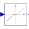

DeadZoneProvide a region of zero output |

|
Information
This information is part of the Modelica Standard Library maintained by the Modelica Association.
The DeadZone block defines a region of zero output.
If the input is within uMin ... uMax, the output is zero. Outside of this zone, the output is a linear function of the input with a slope of 1.
Parameters (2)
| uMax |
Value: Type: Real Description: Upper limits of dead zones |
|---|---|
| uMin |
Value: -uMax Type: Real Description: Lower limits of dead zones |
Connectors (2)
| u |
Type: RealInput Description: Connector of Real input signal |
|
|---|---|---|
| y |
Type: RealOutput Description: Connector of Real output signal |